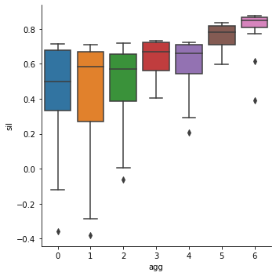
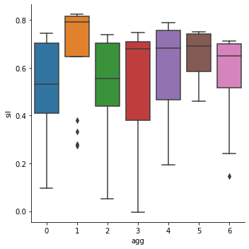

Contents
from sklearn.datasets import make_blobs
X,y = make_blobs(
n_samples=[40,30,30],
centers=[[-2,3],[3,1.5],[2,-2]],
cluster_std=[0.5,0.9,1.5],
random_state = 19716
)
from sklearn import datasets
digits = datasets.load_digits(as_frame=True)["frame"]
X = digits.drop("target",axis="columns")
y = digits["target"]
X.shape
(1797, 64)
digits["sil"] = silhouette_samples(X,y)
digits.groupby("target")["sil"].mean()
---------------------------------------------------------------------------
NameError Traceback (most recent call last)
/var/folders/cn/8w40979d27x0kv2wsnx7zgvm0000gp/T/ipykernel_95177/1855199274.py in <module>
----> 1 digits["sil"] = silhouette_samples(X,y)
2 digits.groupby("target")["sil"].mean()
NameError: name 'silhouette_samples' is not defined
import pandas as pd
import seaborn as sns
blobs = pd.DataFrame({"x1":X[:,0],"x2":X[:,1],"class":y})
sns.relplot(data=blobs,x="x1",y="x2",hue="class");
---------------------------------------------------------------------------
TypeError Traceback (most recent call last)
/var/folders/cn/8w40979d27x0kv2wsnx7zgvm0000gp/T/ipykernel_95177/2861790830.py in <module>
1 import pandas as pd
2 import seaborn as sns
----> 3 blobs = pd.DataFrame({"x1":X[:,0],"x2":X[:,1],"class":y})
4 sns.relplot(data=blobs,x="x1",y="x2",hue="class");
~/anaconda3/lib/python3.8/site-packages/pandas/core/frame.py in __getitem__(self, key)
3456 if self.columns.nlevels > 1:
3457 return self._getitem_multilevel(key)
-> 3458 indexer = self.columns.get_loc(key)
3459 if is_integer(indexer):
3460 indexer = [indexer]
~/anaconda3/lib/python3.8/site-packages/pandas/core/indexes/base.py in get_loc(self, key, method, tolerance)
3359 casted_key = self._maybe_cast_indexer(key)
3360 try:
-> 3361 return self._engine.get_loc(casted_key)
3362 except KeyError as err:
3363 raise KeyError(key) from err
~/anaconda3/lib/python3.8/site-packages/pandas/_libs/index.pyx in pandas._libs.index.IndexEngine.get_loc()
~/anaconda3/lib/python3.8/site-packages/pandas/_libs/index.pyx in pandas._libs.index.IndexEngine.get_loc()
TypeError: '(slice(None, None, None), 0)' is an invalid key
from sklearn.cluster import KMeans
from sklearn.metrics import silhouette_samples
km = KMeans(n_clusters=10)
km.fit(X)
digits["km"] = km.predict(X)
digits["sil"] = silhouette_samples(X,digits["km"])
digits.groupby("target")["sil"].mean()
target
0 0.349429
1 0.193624
2 0.161989
3 0.138016
4 0.177814
5 0.152282
6 0.288325
7 0.174513
8 0.086375
9 0.103436
Name: sil, dtype: float64
blobs.groupby("km3")["sil"].mean()
---------------------------------------------------------------------------
NameError Traceback (most recent call last)
/var/folders/cn/8w40979d27x0kv2wsnx7zgvm0000gp/T/ipykernel_95177/2052879189.py in <module>
----> 1 blobs.groupby("km3")["sil"].mean()
NameError: name 'blobs' is not defined
km = KMeans(n_clusters=2)
km.fit(X)
blobs["km2"] = km.predict(X)
blobs["sil"] = silhouette_samples(X,blobs["km2"])
sns.relplot(data=blobs,x="x1",y="x2",hue="km2",size=blobs["sil"]);
---------------------------------------------------------------------------
NameError Traceback (most recent call last)
/var/folders/cn/8w40979d27x0kv2wsnx7zgvm0000gp/T/ipykernel_95177/370323339.py in <module>
2 km.fit(X)
3
----> 4 blobs["km2"] = km.predict(X)
5 blobs["sil"] = silhouette_samples(X,blobs["km2"])
6 sns.relplot(data=blobs,x="x1",y="x2",hue="km2",size=blobs["sil"]);
NameError: name 'blobs' is not defined
blobs.groupby("km2")["sil"].mean()
---------------------------------------------------------------------------
NameError Traceback (most recent call last)
/var/folders/cn/8w40979d27x0kv2wsnx7zgvm0000gp/T/ipykernel_95177/1057104838.py in <module>
----> 1 blobs.groupby("km2")["sil"].mean()
NameError: name 'blobs' is not defined
from sklearn.metrics import silhouette_samples
blobs["sil"] = silhouette_samples(X,y)
---------------------------------------------------------------------------
NameError Traceback (most recent call last)
/var/folders/cn/8w40979d27x0kv2wsnx7zgvm0000gp/T/ipykernel_95177/2615877886.py in <module>
1 from sklearn.metrics import silhouette_samples
----> 2 blobs["sil"] = silhouette_samples(X,y)
NameError: name 'blobs' is not defined
sns.relplot(data=blobs,x="x1",y="x2",hue="class",size="sil");
---------------------------------------------------------------------------
NameError Traceback (most recent call last)
/var/folders/cn/8w40979d27x0kv2wsnx7zgvm0000gp/T/ipykernel_95177/4291702201.py in <module>
----> 1 sns.relplot(data=blobs,x="x1",y="x2",hue="class",size="sil");
NameError: name 'blobs' is not defined
blobs.groupby("class")["sil"].mean()
---------------------------------------------------------------------------
NameError Traceback (most recent call last)
/var/folders/cn/8w40979d27x0kv2wsnx7zgvm0000gp/T/ipykernel_95177/977169762.py in <module>
----> 1 blobs.groupby("class")["sil"].mean()
NameError: name 'blobs' is not defined
def quad(x,y):
if x > 0:
if y > 0: return 1
else: return 4
else:
if y > 0: return 2
else: return 3
blobs["quadrant"] = [quad(x,y) for (x,y) in zip(blobs.x1,blobs.x2)]
blobs["sil"] = silhouette_samples(X,blobs["quadrant"])
sns.relplot(data=blobs,x="x1",y="x2",hue="quadrant",size="sil");
---------------------------------------------------------------------------
NameError Traceback (most recent call last)
/var/folders/cn/8w40979d27x0kv2wsnx7zgvm0000gp/T/ipykernel_95177/3259268397.py in <module>
7 else: return 3
8
----> 9 blobs["quadrant"] = [quad(x,y) for (x,y) in zip(blobs.x1,blobs.x2)]
10 blobs["sil"] = silhouette_samples(X,blobs["quadrant"])
11 sns.relplot(data=blobs,x="x1",y="x2",hue="quadrant",size="sil");
NameError: name 'blobs' is not defined
blobs.groupby("quadrant")["sil"].mean()
---------------------------------------------------------------------------
NameError Traceback (most recent call last)
/var/folders/cn/8w40979d27x0kv2wsnx7zgvm0000gp/T/ipykernel_95177/3705562191.py in <module>
----> 1 blobs.groupby("quadrant")["sil"].mean()
NameError: name 'blobs' is not defined
from sklearn.metrics import adjusted_rand_score
print(f"ARI: {adjusted_rand_score(y,digits["km"]):.4f}")
File "/var/folders/cn/8w40979d27x0kv2wsnx7zgvm0000gp/T/ipykernel_95177/2136937355.py", line 4
print(f"ARI: {adjusted_rand_score(y,digits["km"]):.4f}")
^
SyntaxError: invalid syntax
# digits["km8"] = km.predict(X)
# digits["sil_kmeans"] = silhouette_samples(X,digits["km8"])
# digits.groupby("km8")["sil_kmeans"].mean()
from sklearn.metrics import pairwise_distances
X = [
[-1.01,-1,-.98],[1,-1.02,-1],[-.98,1,-.99],[1.01,1.01,-1],
[-1.01,-1.01,.99],[1.02,-1.02,1],[-.99,.98,.99],[1,.98,1],
]
D2 = pairwise_distances(X,metric="euclidean")
sns.heatmap(D2)
<AxesSubplot:>
D1 = pairwise_distances(X,metric="manhattan")
sns.heatmap(D1)
<AxesSubplot:>
Dc = pairwise_distances(X,metric="cosine")/2
sns.heatmap(Dc)
<AxesSubplot:>
digits
| pixel_0_0 | pixel_0_1 | pixel_0_2 | pixel_0_3 | pixel_0_4 | pixel_0_5 | pixel_0_6 | pixel_0_7 | pixel_1_0 | pixel_1_1 | ... | pixel_7_1 | pixel_7_2 | pixel_7_3 | pixel_7_4 | pixel_7_5 | pixel_7_6 | pixel_7_7 | target | km | sil | |
|---|---|---|---|---|---|---|---|---|---|---|---|---|---|---|---|---|---|---|---|---|---|
| 0 | 0.0 | 0.0 | 5.0 | 13.0 | 9.0 | 1.0 | 0.0 | 0.0 | 0.0 | 0.0 | ... | 0.0 | 6.0 | 13.0 | 10.0 | 0.0 | 0.0 | 0.0 | 0 | 1 | 0.422168 |
| 1 | 0.0 | 0.0 | 0.0 | 12.0 | 13.0 | 5.0 | 0.0 | 0.0 | 0.0 | 0.0 | ... | 0.0 | 0.0 | 11.0 | 16.0 | 10.0 | 0.0 | 0.0 | 1 | 2 | 0.174561 |
| 2 | 0.0 | 0.0 | 0.0 | 4.0 | 15.0 | 12.0 | 0.0 | 0.0 | 0.0 | 0.0 | ... | 0.0 | 0.0 | 3.0 | 11.0 | 16.0 | 9.0 | 0.0 | 2 | 2 | 0.142942 |
| 3 | 0.0 | 0.0 | 7.0 | 15.0 | 13.0 | 1.0 | 0.0 | 0.0 | 0.0 | 8.0 | ... | 0.0 | 7.0 | 13.0 | 13.0 | 9.0 | 0.0 | 0.0 | 3 | 5 | 0.158938 |
| 4 | 0.0 | 0.0 | 0.0 | 1.0 | 11.0 | 0.0 | 0.0 | 0.0 | 0.0 | 0.0 | ... | 0.0 | 0.0 | 2.0 | 16.0 | 4.0 | 0.0 | 0.0 | 4 | 4 | 0.183050 |
| ... | ... | ... | ... | ... | ... | ... | ... | ... | ... | ... | ... | ... | ... | ... | ... | ... | ... | ... | ... | ... | ... |
| 1792 | 0.0 | 0.0 | 4.0 | 10.0 | 13.0 | 6.0 | 0.0 | 0.0 | 0.0 | 1.0 | ... | 0.0 | 2.0 | 14.0 | 15.0 | 9.0 | 0.0 | 0.0 | 9 | 3 | 0.185392 |
| 1793 | 0.0 | 0.0 | 6.0 | 16.0 | 13.0 | 11.0 | 1.0 | 0.0 | 0.0 | 0.0 | ... | 0.0 | 6.0 | 16.0 | 14.0 | 6.0 | 0.0 | 0.0 | 0 | 1 | 0.405396 |
| 1794 | 0.0 | 0.0 | 1.0 | 11.0 | 15.0 | 1.0 | 0.0 | 0.0 | 0.0 | 0.0 | ... | 0.0 | 2.0 | 9.0 | 13.0 | 6.0 | 0.0 | 0.0 | 8 | 2 | 0.161592 |
| 1795 | 0.0 | 0.0 | 2.0 | 10.0 | 7.0 | 0.0 | 0.0 | 0.0 | 0.0 | 0.0 | ... | 0.0 | 5.0 | 12.0 | 16.0 | 12.0 | 0.0 | 0.0 | 9 | 3 | 0.090942 |
| 1796 | 0.0 | 0.0 | 10.0 | 14.0 | 8.0 | 1.0 | 0.0 | 0.0 | 0.0 | 2.0 | ... | 1.0 | 8.0 | 12.0 | 14.0 | 12.0 | 1.0 | 0.0 | 8 | 3 | -0.030661 |
1797 rows × 67 columns
sns.catplot(data=digits,y="sil_true",x="target",kind="box")
---------------------------------------------------------------------------
ValueError Traceback (most recent call last)
/var/folders/cn/8w40979d27x0kv2wsnx7zgvm0000gp/T/ipykernel_95177/444713779.py in <module>
----> 1 sns.catplot(data=digits,y="sil_true",x="target",kind="box")
~/anaconda3/lib/python3.8/site-packages/seaborn/_decorators.py in inner_f(*args, **kwargs)
44 )
45 kwargs.update({k: arg for k, arg in zip(sig.parameters, args)})
---> 46 return f(**kwargs)
47 return inner_f
48
~/anaconda3/lib/python3.8/site-packages/seaborn/categorical.py in catplot(x, y, hue, data, row, col, col_wrap, estimator, ci, n_boot, units, seed, order, hue_order, row_order, col_order, kind, height, aspect, orient, color, palette, legend, legend_out, sharex, sharey, margin_titles, facet_kws, **kwargs)
3790 p = _CategoricalPlotter()
3791 p.require_numeric = plotter_class.require_numeric
-> 3792 p.establish_variables(x_, y_, hue, data, orient, order, hue_order)
3793 if (
3794 order is not None
~/anaconda3/lib/python3.8/site-packages/seaborn/categorical.py in establish_variables(self, x, y, hue, data, orient, order, hue_order, units)
151 if isinstance(var, str):
152 err = "Could not interpret input '{}'".format(var)
--> 153 raise ValueError(err)
154
155 # Figure out the plotting orientation
ValueError: Could not interpret input 'sil_true'
from sklearn.metrics import pairwise_distances
import seaborn as sns
import numpy as np
X = np.array([[-2,-1],[1,-1],[1,0],[0,2],[-1,0]])
D2 = pairwise_distances(X,metric="euclidean")
D2
array([[0. , 3. , 3.16227766, 3.60555128, 1.41421356],
[3. , 0. , 1. , 3.16227766, 2.23606798],
[3.16227766, 1. , 0. , 2.23606798, 2. ],
[3.60555128, 3.16227766, 2.23606798, 0. , 2.23606798],
[1.41421356, 2.23606798, 2. , 2.23606798, 0. ]])
sns.clustermap(X,col_cluster=False,dendrogram_ratio=(.75,.15))
<seaborn.matrix.ClusterGrid at 0x7f874b7ed310>
from numpy.linalg import norm
C1 = X[[1,2]]
for x in X[[0,3,4]]:
print(min(norm(x-y) for y in C1))
3.0
2.23606797749979
2.0
pairwise_distances(X[0],C1)
---------------------------------------------------------------------------
ValueError Traceback (most recent call last)
/var/folders/cn/8w40979d27x0kv2wsnx7zgvm0000gp/T/ipykernel_95177/780829421.py in <module>
----> 1 pairwise_distances(X[0],C1)
~/anaconda3/lib/python3.8/site-packages/sklearn/metrics/pairwise.py in pairwise_distances(X, Y, metric, n_jobs, force_all_finite, **kwds)
1882 func = partial(distance.cdist, metric=metric, **kwds)
1883
-> 1884 return _parallel_pairwise(X, Y, func, n_jobs, **kwds)
1885
1886
~/anaconda3/lib/python3.8/site-packages/sklearn/metrics/pairwise.py in _parallel_pairwise(X, Y, func, n_jobs, **kwds)
1423
1424 if effective_n_jobs(n_jobs) == 1:
-> 1425 return func(X, Y, **kwds)
1426
1427 # enforce a threading backend to prevent data communication overhead
~/anaconda3/lib/python3.8/site-packages/sklearn/metrics/pairwise.py in euclidean_distances(X, Y, Y_norm_squared, squared, X_norm_squared)
297 [1.41421356]])
298 """
--> 299 X, Y = check_pairwise_arrays(X, Y)
300
301 if X_norm_squared is not None:
~/anaconda3/lib/python3.8/site-packages/sklearn/metrics/pairwise.py in check_pairwise_arrays(X, Y, precomputed, dtype, accept_sparse, force_all_finite, copy)
154 )
155 else:
--> 156 X = check_array(
157 X,
158 accept_sparse=accept_sparse,
~/anaconda3/lib/python3.8/site-packages/sklearn/utils/validation.py in check_array(array, accept_sparse, accept_large_sparse, dtype, order, copy, force_all_finite, ensure_2d, allow_nd, ensure_min_samples, ensure_min_features, estimator)
759 # If input is 1D raise error
760 if array.ndim == 1:
--> 761 raise ValueError(
762 "Expected 2D array, got 1D array instead:\narray={}.\n"
763 "Reshape your data either using array.reshape(-1, 1) if "
ValueError: Expected 2D array, got 1D array instead:
array=[-2. -1.].
Reshape your data either using array.reshape(-1, 1) if your data has a single feature or array.reshape(1, -1) if it contains a single sample.
idx=[1,2]
X[idx]
array([[ 1, -1],
[ 1, 0]])
norm(C1[0]-X[0])
3.0
C1[0]
array([ 1, -1])
X[0]
array([-2, -1])
import pandas as pd
penguins = pd.read_csv("https://www.openml.org/data/get_csv/41/dataset_41_glass.arff")
# X = gas.drop("Class",axis="columns")
X = penguins.drop("Type",axis=1)
import seaborn as sns
penguins = sns.load_dataset("mpg").dropna()
X = penguins[["displacement","horsepower","weight","acceleration","mpg"]]
# X = penguins[["bill_length_mm","bill_depth_mm","flipper_length_mm","body_mass_g"]]
penguins
| mpg | cylinders | displacement | horsepower | weight | acceleration | model_year | origin | name | |
|---|---|---|---|---|---|---|---|---|---|
| 0 | 18.0 | 8 | 307.0 | 130.0 | 3504 | 12.0 | 70 | usa | chevrolet chevelle malibu |
| 1 | 15.0 | 8 | 350.0 | 165.0 | 3693 | 11.5 | 70 | usa | buick skylark 320 |
| 2 | 18.0 | 8 | 318.0 | 150.0 | 3436 | 11.0 | 70 | usa | plymouth satellite |
| 3 | 16.0 | 8 | 304.0 | 150.0 | 3433 | 12.0 | 70 | usa | amc rebel sst |
| 4 | 17.0 | 8 | 302.0 | 140.0 | 3449 | 10.5 | 70 | usa | ford torino |
| ... | ... | ... | ... | ... | ... | ... | ... | ... | ... |
| 393 | 27.0 | 4 | 140.0 | 86.0 | 2790 | 15.6 | 82 | usa | ford mustang gl |
| 394 | 44.0 | 4 | 97.0 | 52.0 | 2130 | 24.6 | 82 | europe | vw pickup |
| 395 | 32.0 | 4 | 135.0 | 84.0 | 2295 | 11.6 | 82 | usa | dodge rampage |
| 396 | 28.0 | 4 | 120.0 | 79.0 | 2625 | 18.6 | 82 | usa | ford ranger |
| 397 | 31.0 | 4 | 119.0 | 82.0 | 2720 | 19.4 | 82 | usa | chevy s-10 |
392 rows × 9 columns
from sklearn import datasets
penguins = datasets.load_wine(as_frame=True)["frame"]
X = penguins.drop("target",axis="columns")
from sklearn.cluster import AgglomerativeClustering
agg = AgglomerativeClustering(n_clusters=7,linkage="single")
agg.fit(X)
AgglomerativeClustering(linkage='single', n_clusters=7)
from sklearn.metrics import silhouette_samples
penguins["agg"] = agg.labels_
penguins["sil"] = silhouette_samples(X,agg.labels_)
print(penguins["agg"].value_counts())
0 130
2 27
6 13
5 5
3 1
4 1
1 1
Name: agg, dtype: int64
agg = AgglomerativeClustering(n_clusters=7,linkage="ward")
agg.fit(X)
penguins["agg"] = agg.labels_
penguins["sil"] = silhouette_samples(X,penguins["agg"])
penguins["agg"].value_counts()
0 44
2 44
1 28
4 28
6 14
5 14
3 6
Name: agg, dtype: int64
import seaborn as sns
sns.catplot(data=penguins,x="agg",y="sil",kind="box");

from sklearn.metrics import adjusted_rand_score
adjusted_rand_score(penguins["Type"],agg.labels_)
---------------------------------------------------------------------------
KeyError Traceback (most recent call last)
~/anaconda3/lib/python3.8/site-packages/pandas/core/indexes/base.py in get_loc(self, key, method, tolerance)
3360 try:
-> 3361 return self._engine.get_loc(casted_key)
3362 except KeyError as err:
~/anaconda3/lib/python3.8/site-packages/pandas/_libs/index.pyx in pandas._libs.index.IndexEngine.get_loc()
~/anaconda3/lib/python3.8/site-packages/pandas/_libs/index.pyx in pandas._libs.index.IndexEngine.get_loc()
pandas/_libs/hashtable_class_helper.pxi in pandas._libs.hashtable.PyObjectHashTable.get_item()
pandas/_libs/hashtable_class_helper.pxi in pandas._libs.hashtable.PyObjectHashTable.get_item()
KeyError: 'Type'
The above exception was the direct cause of the following exception:
KeyError Traceback (most recent call last)
/var/folders/cn/8w40979d27x0kv2wsnx7zgvm0000gp/T/ipykernel_95177/3023259699.py in <module>
1 from sklearn.metrics import adjusted_rand_score
----> 2 adjusted_rand_score(penguins["Type"],agg.labels_)
~/anaconda3/lib/python3.8/site-packages/pandas/core/frame.py in __getitem__(self, key)
3456 if self.columns.nlevels > 1:
3457 return self._getitem_multilevel(key)
-> 3458 indexer = self.columns.get_loc(key)
3459 if is_integer(indexer):
3460 indexer = [indexer]
~/anaconda3/lib/python3.8/site-packages/pandas/core/indexes/base.py in get_loc(self, key, method, tolerance)
3361 return self._engine.get_loc(casted_key)
3362 except KeyError as err:
-> 3363 raise KeyError(key) from err
3364
3365 if is_scalar(key) and isna(key) and not self.hasnans:
KeyError: 'Type'
sns.catplot(data=penguins,x="species",y="sil",kind="box");
---------------------------------------------------------------------------
ValueError Traceback (most recent call last)
/var/folders/cn/8w40979d27x0kv2wsnx7zgvm0000gp/T/ipykernel_95177/3814654465.py in <module>
----> 1 sns.catplot(data=penguins,x="species",y="sil",kind="box");
~/anaconda3/lib/python3.8/site-packages/seaborn/_decorators.py in inner_f(*args, **kwargs)
44 )
45 kwargs.update({k: arg for k, arg in zip(sig.parameters, args)})
---> 46 return f(**kwargs)
47 return inner_f
48
~/anaconda3/lib/python3.8/site-packages/seaborn/categorical.py in catplot(x, y, hue, data, row, col, col_wrap, estimator, ci, n_boot, units, seed, order, hue_order, row_order, col_order, kind, height, aspect, orient, color, palette, legend, legend_out, sharex, sharey, margin_titles, facet_kws, **kwargs)
3790 p = _CategoricalPlotter()
3791 p.require_numeric = plotter_class.require_numeric
-> 3792 p.establish_variables(x_, y_, hue, data, orient, order, hue_order)
3793 if (
3794 order is not None
~/anaconda3/lib/python3.8/site-packages/seaborn/categorical.py in establish_variables(self, x, y, hue, data, orient, order, hue_order, units)
151 if isinstance(var, str):
152 err = "Could not interpret input '{}'".format(var)
--> 153 raise ValueError(err)
154
155 # Figure out the plotting orientation
ValueError: Could not interpret input 'species'
from sklearn.cluster import KMeans
km = KMeans(n_clusters=7)
km.fit(X)
penguins["agg"] = km.labels_
penguins["sil"] = silhouette_samples(X,penguins["agg"])
sns.catplot(data=penguins,x="agg",y="sil",kind="box");
